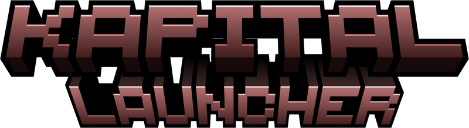

One place to play the three chapters of Kapitel Kapital. It keeps each pack ready and starts the game through Prism Launcher, which handles your Microsoft sign-in.
For Windows 11 and macOS on Apple Silicon. Needs Prism Launcher, free and open source.